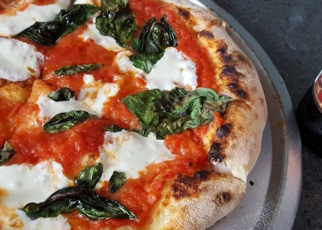

Quick and Easy Pizza

Description
Learn how to make pizza at home under a time crunch!
This is the only recipe you'll ever need for fast,
homemade pizza dough. It is so simple, anyone can do it!
All you need is a quality homemade pizza dough, your favorite toppings, and an appetite.
Let's get cooking!
Ingredients
- 1 bag pizza dough
- 16oz pizza sauce
- 2 tsp dried Italian herbs
- 3 tbsp flour
- 2 tbsp parmesan cheese
- 1 pinch salt
- 8 oz shredded mozzarella
- ⅔ cup toppings
- 2 tbsp basil
Steps
- Let the store bought door rise for 30 minutes
- Stretch dough out using a circular motion and transfer it to a sheet pan
- Brush dough with olive oil, add cheese and desired toppings
- Bake the pizza at 500 for 10 minutes
- Add basil during the last 5 minutes and let cool before slicing.
Great for a quick dinner on a busy night!